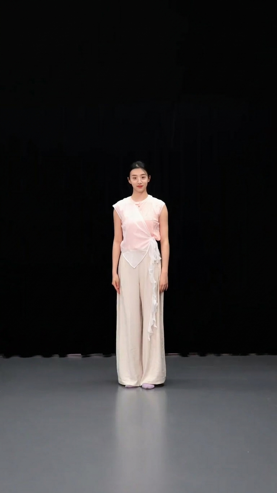

DanceCrafter enables fine-grained text-driven generation of 3D dance motions and expressive 2D videos. We construct DanceFlow, the finest-grained dance dataset to date, grounded in a novel Choreographic Syntax. Our data originates from two sources: (Left) curated in-the-wild and professional video archives and (Upper Right) high-fidelity motion capture from dance experts. (Lower Right) Driven by expert-guided, highly detailed choreographic descriptions (averaging 248 words), our tailored generation framework achieves precise control and high-fidelity synthesis of complex dance sequences.
Motion Capture Dataset
Dance Archieve Dataset
Generated Motion Videos
Generated Motion Sample 1
The dancer stands facing point 1, then pivots quickly clockwise on the right foot for one full turn. At the end of the turn, the feet separate, both knees bend, and the center of gravity drops sharply. At the same time, the left arm bends and lifts, the left palm turned inward and placed near the chin, while the right arm hangs naturally by the right side; the head turns slightly, with the gaze directed toward point 1. After a brief pause, the body straightens as the right arm sweeps upward in an arc from low to the right side, initiating another clockwise turn. During the rotation, both arms open horizontally to the sides by inertia, and the hair whips with the motion. The turn stops facing point 2, with the weight settling onto the left leg; the right foot then steps toward point 3, shifting the body weight in that direction. Simultaneously, the right arm extends horizontally toward point 3 across the front of the chest, while the left arm stretches backward toward point 7, both arms roughly on the same horizontal line. The final pose is a side-facing stance toward point 3, right leg forward, left leg back, right arm reaching forward, left arm extended behind, with the gaze directed toward point 3.
Then dancer faces the 2 o’clock direction, legs slightly apart with the weight on the left leg, the right foot lightly touching the floor, arms relaxed in front of the abdomen, and the head turned toward 1 o’clock. Initiating toward 8 o’clock, the weight shifts sharply as both feet lightly leave the floor in a small jump, the body traveling to the right. In the air, the left arm sweeps from the side of the body up and over the head in a circular arc, while the right arm extends downward to the right, and the legs alternate. Upon landing, the dancer pivots on the right foot, executing one fast clockwise turn, the arms following the rotation and passing overhead at a high level. After the turn, the right foot steps toward 8 o’clock with a bent, weight-bearing knee, the left leg retreats toward 4 o’clock with the knee straight, forming a lunge facing 8 o’clock. Simultaneously, the torso powerfully extends toward 8 o’clock and arches backward, the chest opening; the right arm reaches diagonally up toward 8 o’clock with lengthened fingertips, while the left arm stretches diagonally down toward 4 o’clock, creating a strong opposing diagonal line. The head drops back, gaze directed up to the right, holding an open, deeply back-arched shape facing 8 o’clock. Then the core releases, the upper body collapses forward, the arms fall naturally, and the weight settles downward.
Generated Motion Sample 2
Facing 3 o’clock, the dancer holds a low center, supported on the left leg with the left knee bent; the right leg extends back to the right, toe lightly touching the floor. The right arm lifts to shoulder height with a bent elbow and flexed wrist, fingertips pointing upward, while the left arm presses downward in front of the body. Using the left foot as a pivot, the dancer executes a fast clockwise turn. During the turn, both arms open laterally to a horizontal position, driving the skirt to spin smoothly in a flat plane. After stopping, the body faces 7 o’clock as the weight shifts onto the right leg, the right knee softly bent; the left leg extends back to the left with the toe pointed, and the torso inclines slightly toward 7 o’clock. The right arm reaches high overhead with the palm turned upward, the left arm extends down-left with a gentle bend through the elbow, the head tilts slightly back, and the gaze lifts toward the upper 7 o’clock.
After a brief suspension, the dancer rotates counterclockwise to face 3 o’clock; the right arm sweeps down in an arc across the front of the body as the left arm rises from below, the movement continuous as the weight transfers onto the right foot. Immediately, both legs push off into a jump, the center lifting into suspension; in the air, the body turns counterclockwise to face 5 o’clock away from the camera, knees bending and drawing in as both arms lift upward along the sides. On landing, the weight drops sharply to absorb impact: the right knee bends deeply to support close to the floor, the left leg extends straight to the left. The torso folds forward powerfully, the left arm strikes downward toward the floor in front, the right arm whips straight back to the right, and the head follows the downward motion, resolving in a sharp, forceful freeze at an extremely low center facing 5 o’clock.
Generated Motion Sample 3
Facing 1 o’clock with a gentle smile, the dancer lifts their arms into an overhead V. They then perform a jumping motion, bending the knees and folding the lower legs back as arms drop to the sides. Landing softly on the balls of the feet, the weight sinks and then rocks between both feet. Rhythmic shoulder shrugs follow, with the head tilting from 3 toward 7 o’clock as loose fists swing beside the cheeks. Finally, the arms extend horizontally toward 3 and 7 o’clock, resolving in an upright pose with legs together and arms out to the sides.
Reference-to-Video Pipeline Example
This example shows a single generation pipeline conditioned on the reference appearance image. The three videos are arranged in order: 3D pose generation, 2D skeleton rendering, and the final generated dance video.
Reference Image

3D Pose
2D Skeleton
Final Video
BibTeX
@misc{yuan2026dancecrafterfinegrainedtextdrivencontrollable,
title={DanceCrafter: Fine-Grained Text-Driven Controllable Dance Generation via Choreographic Syntax},
author={Hang Yuan and Xiaolin Hu and Yan Wan and Menglin Gao and Wenzhe Yu and Cong Huang and Fei Xu and Qing Li and Christina Dan Wang and Zhou Yu and Kai Chen},
year={2026},
eprint={2604.18648},
archivePrefix={arXiv},
primaryClass={cs.CV},
url={https://arxiv.org/abs/2604.18648}
}